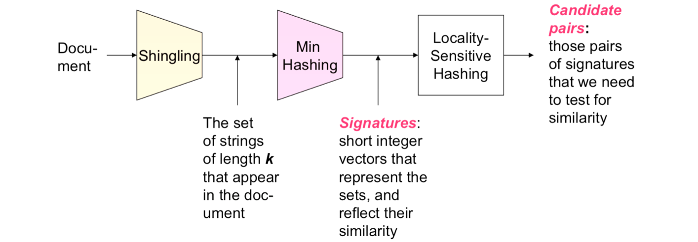
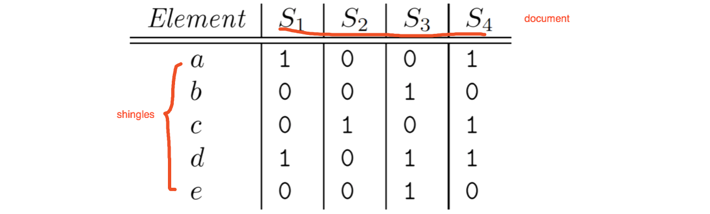
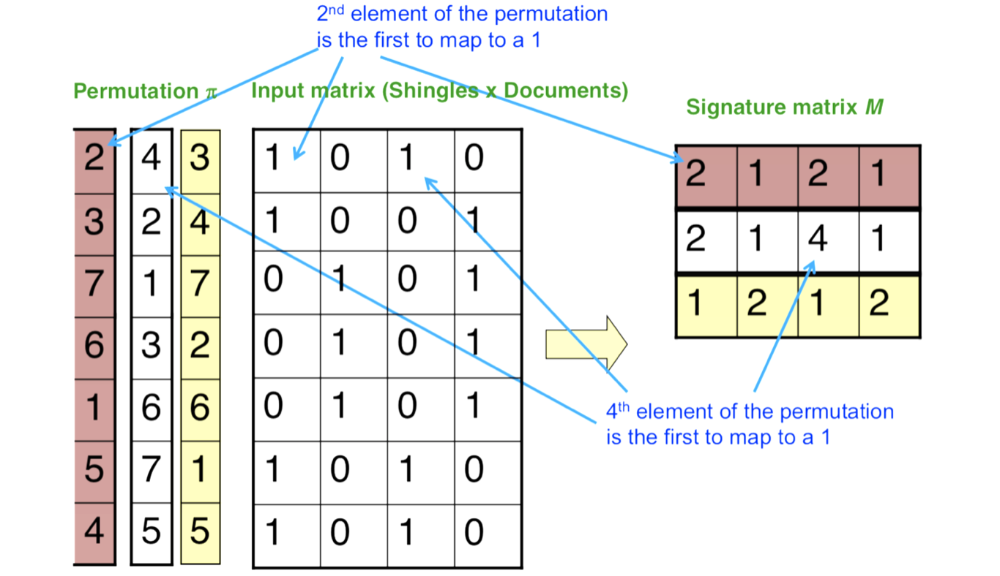
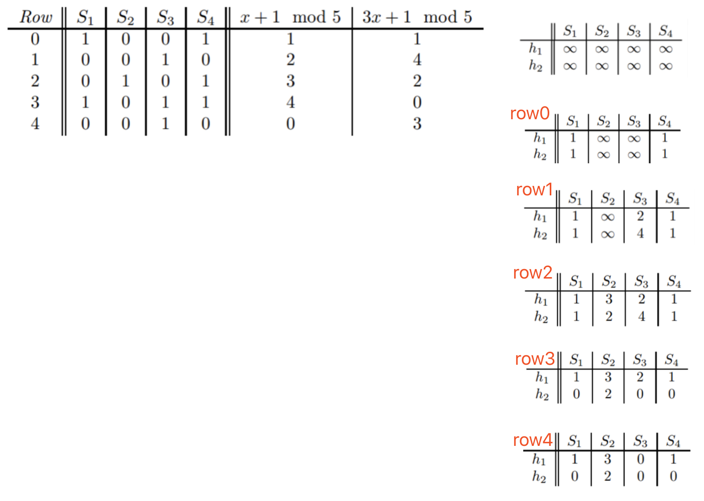
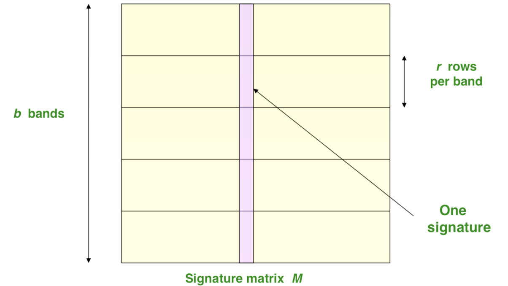
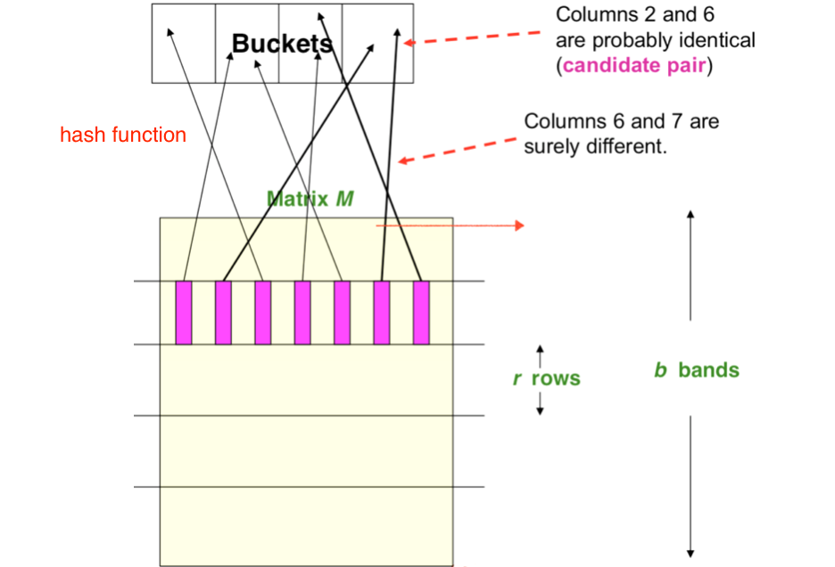
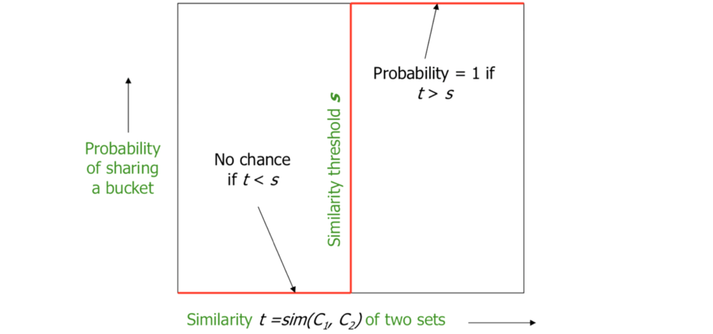
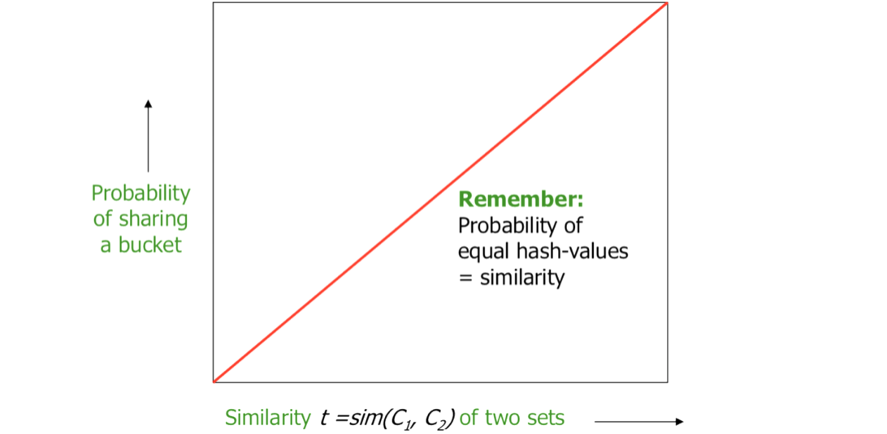
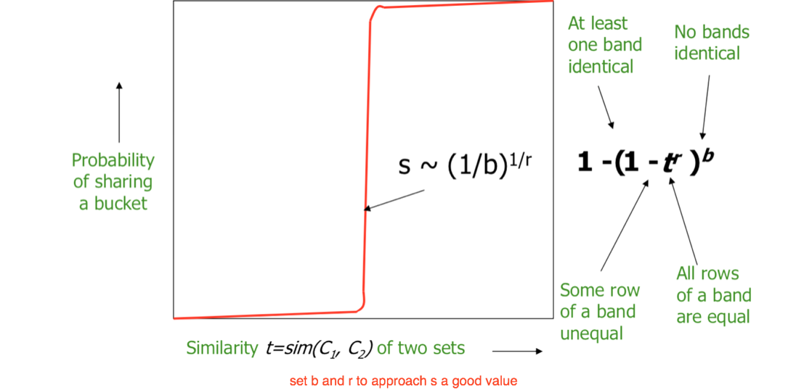
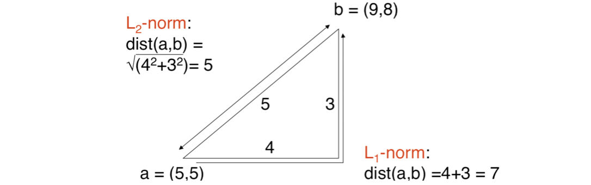

本周主要内容：
- Shingling
- Min-Hashing
- Locality-Sensitive Hashing(LSH)
What is finding similar items?
-
Problems of Finding Similar Items
- Pages with similar words
- For duplicate detection, classification by topic
- Customers who purchased similar products
- Products with similar customer sets
- Images with similar features
- Google image search
- Pages with similar words
-
Problem we’re going to talk about…
-
Given: High dimensional data point x1, x2,…
-
And some distance function d(x1, x2)
- which quantities the “distance” between x1 and x2
-
Goal: Find all pairs of data point(xi, xj) that are within some distance threshold d(xi, x2=j) ≤ s
-
Note: Naïve solution would take O(N2)
-
We are going to optimise it to O(N)
-
- Distance Measures
- Jaccard similarity: The Jaccard similarity of two sets is the size of their intersection divided by the size of their union
sim(C1, C2) = |C1 ∩ C2|/|C1 ∪ C2| - Jaccard distance: d(C1,C2) = 1 - sim(C1, C2)
- Jaccard similarity: The Jaccard similarity of two sets is the size of their intersection divided by the size of their union
How to find similar items?
Goal: Given a large number (N in the millions or billions) of documents, find “near duplicate” pairs
Solution: 3 essential steps for similar docs:
- Shingling: Convert documents to sets
- Min-Hashing: Convert large sets to short signatures, while preserving similarity
- Locality-Sensitive Hashing: Focus on pairs of signatures likely to be from similar documents. Candidate pairs!

Shingling: Convert documents to sets
-
k-shingle(or k-gram):
A k-shingle for a document is a sequence of k tokens that appears in the doc- Tokens can be characters, words or something else, depending on the application
- Assume tokens = characters for example
- Example: k = 2, doc D1 = abcab
set of 2-shingles:S(D1)={ab,ba,ca} remove duplicate
（shingles as a bag is another option: do not remove duplicate，contain frequency information）
-
Shingles and Similarity
- Documents that are intuitively(凭直觉地) similar have many shingles in common.
- Changing a word only affects k-shingles within distance k-1 from the word.
- Re-ordering paragraphs only affects the 2k shingles that cross paragraph boundaries.
- Example: k = 3
“The dog which chased the cat” and "The dog that chased the cat"
Only 3-shingles replaced are g_w, _wh, whi, hic, ich, ch_ and h_c
(两句话很像，shingles相似度也很高)
-
Compressing Shingles
- To compress long shingles, we can hash them to 4 bytes.
- Represent a document by the set of hash values of its k-shingles.
- Two documents could (rarely) appear to have shingles in common, when in fact only the hash-values were shared
- Example: k=2; document D1= abcab
Set of 2-shingles: S(D1) = {ab, bc, ca}
Hash the singles: h(D1) = {1, 5, 7}
-
Similarity Metric for Shingles
- k-shingles C1 = S(D1)
- Equivalently, each document is a 0/1 vector in space of k-shingles
- each unique shingle is a dimension
- vectors are very sparse
- A natural similarity measure is the Jaccard similarity
-
About k
- If k is too small, then we would expect most sequences of k characters to appear in most documents
- when k = 1(26个字母), almost all Web pages will have high similarity.
- So, pick k large enough, or most documents will have most shingles.
- k = 5 is OK for short documents
- k =10 is better for long documents
- If k is too small, then we would expect most sequences of k characters to appear in most documents
Min-Hashing
Min-Hasing: Convert large sets to short signatures, while preserving similarity
- Suppose we need to find near-duplicate documents among N = 1 million documents
- Naïvely, we would have to compute pairwise Jaccard similarities for every pair of docs, it still take a lot of time.
So we need next step: min-hashing.
Convert to Boolean Matrices
- Encoding Sets as Bit Vectors
- Many similarity problems can be formalized as finding subsets that have significant intersection
- Encode sets using 0/1 (bit, boolean) vetors
- set intersection -> bitwise AND, and set union -> bitwise OR
- Example: C1 = 10111; C2 = 10011
Size of intersection = 3; size of union = 4,
Jaccard similarity = 3 / 4, Jaccard Distance = 1/ 4
- Sets to Boolean Matrices
- Rows = elements(shingles)
- Columns = sets(documents)
- Example:S1 ={a,d}, S2 ={c}, S3 ={b,d,e}, S4 ={a,c,d}
sim(S1, S3) = 1 / 4

Min-Hash Signatures
Goal: Finding Similar Columns
Naïve approach: compare all pairs take too much time.
Solution: Hashing Columns(Signatures)
We try to find a hash function h(*) s.t.
if sim(C1,C2) is high, then with high prob. h(C1) = h(C2)
if sim(C1,C2) is LOW, then with high prob. h(C1) ≠ h(C2)
There is a suitable hash function for Jaccard similarity: Min-Hashing
- Imagine the rows of the boolean matrix permuted under random permutation π
- Define a “hash” function hπ( C ) = the index of the first (in the permuted order π) row in which column C has value 1: hπ( C )= minπ π( C )
Example:
Signature matrix is the element of the permutation(left one) is the first to map to a 1
比如:先看红色的permutation从1-7，1是倒数第三行，对应S1是0，所以继续看2，2是第一行，对应S1是1，所以2就是第一个map to 1的值，填到signature S1第一个位置。以此类推。

- Pr[min(π(C1)) = min(π(C2))] = sim(C1, C2)
Similarity of two columns has the hash value is exactly to the Jaccard similarity.- Type X rows have 1 in both columns,
Type Y rows have 1 in one of the columns and 0 in the other,
Type Z rows have 0 in both columns. - Since the matrix is sparse, most rows are of type Z.
- The ratio of the numbers of type X and type Y rows determine both SIM(C1, C2) and the probability that mh(C1) = mh(C2).
- Let there be x rows of type X and y rows of type Y .
- Then, the Jaccard similarity is: SIM(C1, C2) = x / x + y
- If we imagine the rows permuted randomly, and we proceed from the top, the probability that we shall meet a type X row before we meet a type Y row is, as before, P(mh(C1) = mh(C2)) = x / x + y
- Type X rows have 1 in both columns,
-
sig( C )[i] = according to the i-th permutation, the index of the first row that has a 1 in column C
sig( C )[i] = min (πi( C ))- Note: The sketch (signature) of document C is small!
-
Row hashing
- Pick K = 100 hash functions ki
- Ordering under ki gives a random row permutation!
- ha,b(x)=((a·x+b) mod p) mod N
where: a,b: random integers, p: prime number (p > N)
-
One-pass implementation
- For each column C and hash-func. ki keep a “slot” for the min-hash value
- Initialize all sig( C )[i] = ∞
- Scan rows looking for 1s
- Suppose row j has 1 in column C
- Then for each ki : If ki( j ) < sig( C )[i], then sig( C )[i] <- ki( j )
Example:

We can estimate the Jaccard similarities of the underlying sets from this signature matrix.
- Signature matrix: SIM(S1, S4) = 1.0
- Jaccard Similarity: SIM(S1, S4) = 2/3
LSH
Focus on pairs of signatures likely to be from similar documents
-
Goal: Find documents with Jaccard similarity at least s (for some similarity threshold, e.g., s=0.8)
-
LSH:
General idea: Use a function f(x,y) that tells whether x and y is a candidate pair: a pair of elements whose similarity must be evaluated -
For Min-Hash matrices:
- Hash columns of signature matrix M to many buckets
- Each pair of documents that hashes into the same bucket is a candidate pair
-
Pick a similarity threshold s (0 < s < 1)
-
Columns x and y of M are a candidate pair if their signatures agree on at least fraction s of their rows:
M (i, x) = M (i, y) for at least frac. s values of i- We expect documents x and y to have the same (Jaccard) similarity as their signatures
-
Big idea: Hash columns of signature matrix M several times
-
Arrange that (only) similar columns are likely to hash to the same bucket, with high probability
-
Candidate pairs are those that hash to the same bucket

- Divide matrix M into b bands of r rows
- For each band, hash its portion of each column to a hash table with k buckets
- Make k as large as possible
- Candidate column pairs are those that hash to the same bucket for ≥ 1 band
- Tune b and r to catch most similar pairs, but few non-similar pairs

- Simplifying Assumption
- There are enough buckets that columns are unlikely to hash to the same bucket unless they are identical in a particular band
- Hereafter, we assume that “same bucket” means “identical in that band”
- Assumption needed only to simplify analysis, not for correctness of algorithm
Example:
- Suppose 100,000 columns of M (100k docs)
- Signatures of 100 integers (rows)
- Therefore, signatures take 40Mb
- Choose b = 20 bands of r = 5 integers/band
- Goal: Find pairs of documents that are at least s = 0.8 similar
Find pairs of ≥ s=0.8 similarity, set b=20, r=5
- Assume: sim(C1, C2) = 0.8
- Since sim(C1, C2) ≥ s, we want C1, C2 to be a candidate pair: We want them to hash to at least 1 common bucket (at least one band is identical)
- Probability C1, C2 identical in one particular band: (0.8)5 = 0.328
- Probability C1, C2 are not similar in all of the 20 bands: (1-0.328)20 =0.00035
- i.e., about 1/3000th of the 80%-similar column pairs are false negatives
- We would find 99.965% pairs of truly similar documents
Analysis of LSH
-
What we want 
-
What 1 Band of 1 Row Gives You
-
What b Bands of r Rows Gives You
- The probability that the minhash signatures for the documents agree in any one particular row of the signature matrix is t (sim(C1, C2) )
- Pick any band (r rows)
- Prob. that all rows in band equal = tr
- Prob. that some row in band unequal = 1 - tr
- Prob. that no band identical = (1 - tr)b
- Prob. that at least 1 band identical = 1 - (1 - tr)b
Distance Measures
Generalized LSH is based on some kind of “distance” between points.
d is a distance measure if it is a function from pairs of points to real numbers such that:
- d(x,y) > 0.
- d(x,y) = 0 iff x = y.
- d(x,y) = d(y,x).
- d(x,y) < d(x,z) + d(z,y) (triangle inequality).
Some Euclidean(欧几里得) Distances
-
L1 norm: sum of the differences in each dimension.
- Manhattan(曼哈顿) distance = distance if you had to travel along coordinates only.
-
L2 norm: d(x,y) = square root of the sum of the squares of the differences between x and y in each dimension.
- The most common notion of “distance.”

Some Non-Euclidean Distances
- Jaccard distance for sets = 1 - Jaccard Similarity
- Cosine distance for vectors = angle between the vectors
- Edit distance for strings = number of inserts and deletes to change one string into another
- or equivalent definition: d(x,y) = |x| + |y| - 2|LCS(x,y)|.
- LCS = longest common subsequence = any longest string
obtained both by deleting from x and deleting from y.
Example:
x=abcde; y=bcduve.
- Turn x into y by deleting a, then inserting u and v after d. Edit distance = 3.
- Or, computing edit distance through the LCS, note that LCS(x,y) = bcde.
- Then:|x| + |y| - 2|LCS(x,y)| = 5 + 6 –2*4 = 3 = edit distance.